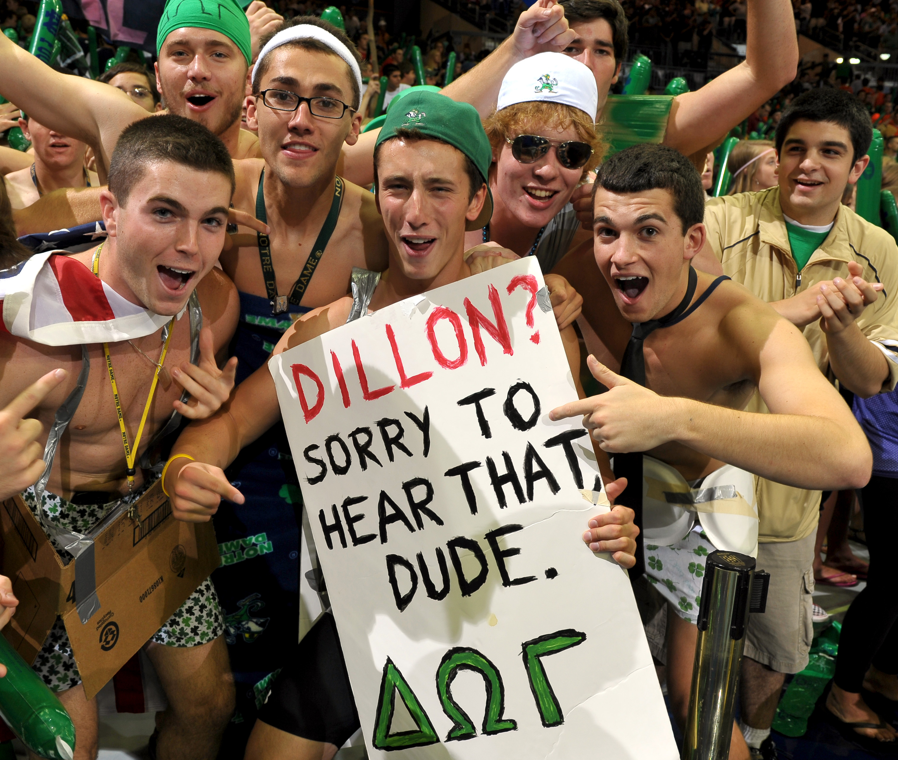

Fast Facts
Name: Alumni Hall
Mascot: Dawg
Color: Green
Location: South Quad
Founded: 1931
Chapel: St. Charles Borromeo
Brother Dorm: Dillon
Sister Dorm: Welsh Family
About the Dorm
Notre Dame by choice, Alumni by the grace of God.
The Building
Alumni Hall was founded in 1931, next to the strikingly similar Dillon Hall. These two dorms were built during Knute Rockne's tenure as head coach and completed only shortly after his death. Relief sculptures of Rockne and his dog, Clashmore Mike, are carved into Alumni's architecture. At the time, Clashmore Mike was the sideline mascot for the university football team, and the Alumni mascot of the "Dawg" was adopted in memory of Knute Rockne, as Alumni took in the dog as their own after his passing.

During its construction, the gray stone and earth-tone brick used on the large dorms were the first of their kind for ND, and so the two dorms received the nickname "The Platinum Coast," situated across South Quad from the "Gold Coast," of Badin, Howard, and Walsh and Sorin. Alumni Hall is built in the French Collegiate Gothic style, a heavy, stone-based style that was fond of gargoyles (like the one in our tower) and ornamentation, a style now reused and riffed on for many other buildings at Notre Dame, such as the new dorms, Dunne and Flaherty. Other figures on our walls include St. Thomas Aquinas, Madonna and Child, and an unnamed student referred to as "Joe College," leaving his studies for the real world, something that Alumni hopes to prepare its residents for, in ways far beyond merely academics.
Traditions
While there are no fraternities at Notre Dame, we don the Greek letters Delta Omega Gamma (DOG) during Welcome Week, Rivalry Week, Wake Week, and Senior Week. This lets every other dorm know we are there, with bright green lights on South Quad, and to represent the true spirit of fraternity—brotherhood—that we share dearly with fellow residents.
In our 87 years, Alumni has created and followed many traditions. Perhaps none are as old as the disdain for our brother dorm, Dillon. While the shenanigans hit their peak in the 70s and 80s with so-called 'Dillon Golf' and shouting of "Dillon sucks!", the rivalry between our two halls still hits its stride every year in October, during the most storied and intense "Rivalry Week" on campus, a week of competition that ends with the joint Big Red Dawg Dance.
However, this is not the main event for Alumni—no, our favorite tradition comes in April, during Wake Week. A week of celebration, whose activities and origins remain shrouded in mystery to freshmen until such a time that they experience it firsthand, let it simply be said that nearly every Dawg, since its humble origins in 1983, declares that the Wake is the best week of his life.
But there are many other traditions and events, some more recent than others, which have stood the test of time in our sacred hall. Our "five dollar formal" celebrates tomfoolery by asking residents to find an outfit costing a total of 5 bucks, and wear it to a bowling alley for a night of good fun. Our rector Fr. George, who has just celebrated his 40th year as our rector, will be turning 80 this January, and his birthday party formal is among our other favorite nights in Alumni.
On Fridays of home football weekends, Alumni puts on an activity known as "quad dancing." At precisely 12:31 p.m., residents charge out of the South Quad doors dressed in bizarre costumes. They proceed to dance rambunctiously on South Quad for slightly less than ten minutes, then return inside and continue with their day.
Other traditions include our annual Christmas Lights competition, Dive Night in America™ and the Dawg Run 5K. Dawg Mass and Emmaus are held every week and a great way to meet fellow dawgs.
Some legends deserve to be passed down by word of mouth. Ask your RA about other Alumni Hall traditions.
Wake Week Countdown
Countdown to Wake Week
FGR
Fr. George Rozum, affectionately known as FGR, is the reason why our traditions have persevered to this day; the man means too much to Alumni to express in words. Every Pup feels at home when they first set foot in Alumni, as Fr. George memorizes the name, hometown, and major of every incoming resident long before they get to campus. It is no small matter, walking into the Main Circle doors your first day, bags in hand, beneath a banner that reads "Center of the Universe." Take that phrase tongue in cheek, or recognize its meaning. Not only are we perfectly located on the Main Circle, we are near all academic buildings, a stone's throw from the dining hall, and a two-minute walk to LaFun. Alumni will be your home on your first day and for the next four years. Strangers become neighbors, become friends, become brothers. FGR sums up life in Alumni Hall better than anyone else when he says, "Notre Dame by choice, Alumni by the grace of God."

Fr. George has served as rector of Alumni Hall since 1978. On May 5, 2018, dawgs of all ages gathered to celebrate our beloved rector. It was a celebration of FGR's 50th year as a priest and 40th year as rector of Alumni Hall. There's something special about Fr. George, something that words can't quite express fully. As you encounter FGR throughout your time in Alumni, you'll learn why we all love him so dearly.
Dorm Layout
Dawgs live on the 1st, 2nd, and 3rd floors of Alumni. In the basement, we have a recently renovated lounge with couches, study booths, a piano, and ping-pong and pool tables, making it an excellent place for all Dawgs to study or hang out. The basement is also home to Alumni's student-run Dawg Pizza, which is open late on weeknights for hungry Dawgs. You can also find the infrequently used kitchen and the much more frequently used laundry room.
The St. Borromeo Chapel is found on the First Floor, down the hall from the South Quad entrance and Fr. George's room. If you enter from the Main Circle doors, you can find the 24-hour lounge directly to your left, the mailroom just a few steps ahead of that, and the print/copy room further down the hallway. The Second and Third Floors are primarily dorm rooms, along with study rooms by the hall bathrooms and a lounge in the Southwest Alley corridor. You can follow the Main staircase up to the Fourth Floor to find the study lounge.
The Fifth Floor is solely the attic, which is accessible from the spiral staircase on the Third Floor or through the study lounge on the Fourth Floor. Dawgs typically store whatever they don't need in their room during their year up here, like sporting equipment.
Sections
Alumni has three entrances: the doors at Main Circle, South Quad, and the Courtyard. Each of the residential floors consist of four hallways: Challey, Main, Talley, and Southwest Alley (SA). Every Dawg differs in his judgment of which entrance is the quickest way to get to their hallway. Generally, SA and 2-3 Talley residents enter through the Courtyard doors; Main and Challey residents come through the South Quad doors, and 1 Talley residents come through the Main Circle doors. It sounds like gibberish now, but you’ll quickly understand what these terms mean.
Challey: 101-117, 201-217, 301-317
Main: 118-127, 157-167, 218-227, 254-267, 318-327, 354-368
Talley: 129-135, 144-152, 228-235, 244-253, 328-335, 328-353
SA: 136-143, 236-243, 336-343
To access the floor plans, you will need to login with your NetID.